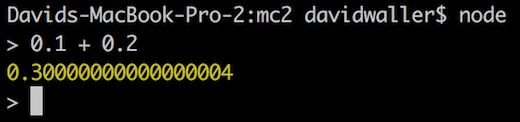
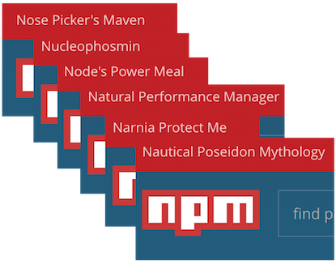
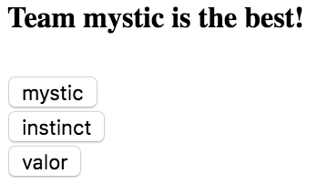
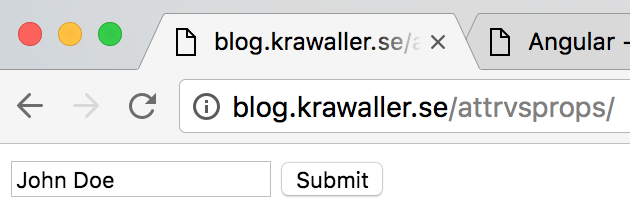
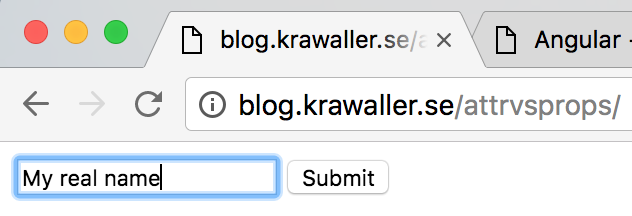

Appendix: Web stuff
Laying out the toolsThis appendix chapter gathers a bunch of different good-to-knows regarding the web in general and JavaScript in particular, that might benefit you while working with Angular.
The JavaScript language
lingua franca of the web
So - JavaScript! Let's kick things off with a chopper view of the language.
First, here is an overview of the different JavaScript versions:

We will be using the very latest features, which we will walk through later.
...as well as some more stuff beyond the borders of JavaScript, but that comes later too!
Since we can't trust all browsers to know the latest JS, we must convert our code. We do this either by...
- apolyfilling
- btranspiling
Polyfilling means adding a homebrew version of a method if a native one isn't available. This can be done programmatically, like this:
Array.isArray = Array.isArray || function(a){
return '' + a !== a && {}.toString.call(a) == '[object Array]';
});
But syntax changes requires a transpilation step that must be done prior to running the code. We cannot do this programmatically.
Speaking of JavaScript's character - are you familiar with the 3 levels of programming?
They were interesting, but what do they have to do with JavaScript?
JavaScript's flexible nature encourages and empowers level 2 behaviour.
So take care, and remember:
With great power comes great responsibility
Wielding of that power requires you to have a grasp JS's quirks, of which there are many.
These ones are especially important:
- Loose typing and truthiness
- The implicit
thisparameter - Lexical scoping
- closures
A very good resources for these quirks is JavaScript Garden.
For more general JS references we recommend MDN (and not W3Schools).
The web as a platform
this or this or this or
Zooming out from JS, we also need to realise a few things regarding the web as a platform.
By that we mean building applications with JavaScript, HTML and CSS.
Something that is often overwhelming to newcomers is that there is an abundance of choices to make, for many different aspects;
- what framework to use
- what build chain to use
- which JS language flavour to use
- what CSS preprocessor to use
- what style rules to enforce
- how to enforce those rules
...and many more.
And for each of those choices, you must consider;
...and also:
...and likely a few more that we've forgotten.
Regarding the choice of framework, the most important aspect is perhaps that of complexity:
The one we've chosen here, Angular, is of medium- to heavy weight.
Which means that it offers us all we need, but still leaves some room to make choices!
Observe that there is no right or wrong in the complexity choice.
The important thing is to be aware of where on the scale you are, and understand the consequences of that.
Node and NPM
workbench and pantry
In the course we'll rely heavily on
- athe JavaScript runtime Node and
- bthe package manager npm
...so let's touch briefly on both!
Node is mostly associated with running JavaScript on the server, but in actuality it is a JavaScript runtime that can be run anywhere. Some differences versus the in-browser runtime is that
- Node has no DOM
- Node can read and write files
- Node has its own module system
There are two ways to execute JS with Node. We can enter the REPL by typing node in a node terminal...

...or we can execute JavaScript files by typing node myfile.js which executes the JS code in myfile.js.
This of course is the most common usage of Node.
JS developers frequently use Node to run code as part of their build chain.
However, Node is also used for running npm, through which we can download packages from the online repository at https://www.npmjs.com/.
Allegedly npm is an acronym for Node Package Manager, but npm themselves deny that through consistently using lower-case characters, and through the top-left corner of their homepage:

We download packages by
- turning our own code into a package through adding a
package.jsonfile - listing the packages we depend on in that file
- typing
npm installto download all listed dependencies tonode_modules - using those modules in our code!
By having package.json as part of the project, but excluding node_modules, we get a small code repository which can still be easily inflated with dependencies.
And we can still be sure that everyone has the same dependcies.
(...at least if we're careful...)
A downloaded published module will normally look like this:
The package.json file will specify where in the source the entry point is.
So! Node's module system that we mentioned earlier lets us
- import stuff from other files by using
require - export stuff from files by assigning to
module.exports
But now for the beautiful part - we can also require packages from node_modules!
Thus Node and npm together solve both the code modularisation problem along with 3rd party code import problem.
Here's the full truth about how we require stuff:
The important part is to realise that there is no magic involved, and that Node provides us with a convenient way to load...
- core modules (like
fs,http, etc) - 3rd party code (like
angular) - own local modules (like
./src/mycomponent)
CSS Selectors
You know of them, but do you know them?
When we say CSS, we are actually talking about two different syntaxes:
div > h1:first-child {
background-color: #CCC;
font-style: italic;
}
- The line preceeding the brackets is a selector
- The stuff inside the brackets are style rules which will be applied to all nodes matching the selector
They are used for two very different things:
- Selectors allow you to reference a set of DOM nodes
- With style rules you describe what the nodes look like
The DOM has its own API for selecting nodes, but it is really limited and verbose.
Therefore jQuery imported CSS selectors to JS:
jQuery('div > h1:first-child').doSomethingWithTheseNodes();
This turned out to be a really good idea, and the biggest reason behind why jQuery is now used by half of the internet.
Because this was such a good idea, it has now been made into a native DOM method:
document.querySelectorAll('h1:first-child').doSomething();
There is also a document.querySelector variant that always returns just 1 node (or none).
And, as we will soon see, CSS selectors are also used in Angular!
All this make for a very good reason to brush up on your CSS selector knowledge, so let's do that now!
CSS selectors are made up by two parts:
Starting with element descriptions, they describe elements in one or more of five different ways:

These can be combined however you see fit. Here is an (exaggerated) example using all of them:
button[disabled]#deletemsg.big:first-child
This would match all
- nodes of type buttons
- that has a disabled attribute
- and id is
deletemsg - and class attribute contains 'big'
- and it is the first child of its parent
Now for the combinators! There are 4 different different ways that descriptions can be combined.
We'll now look closer at one at a time!
- adescendant combinator
- bchild combinator
- csibling combinator
- dadjacent sibling combinator
The perhaps most common one is the descendant combinator. By having two descriptions with a space between...
div p
div p
...we match all elements that
- match the last description
- have an ancestor matching the first description. This can be any number of generations up the tree.
It is unfortunate that the descendant combinators doesn't have a non-space symbol, something like this:
div _ p
Whitespace elsewhere in CSS doesn't have meaning, but here it suddenly does. To help with this, think of descendant combinators as invisible symbols!
div > p
The child combinator is very similar to descendant selector, but here the first selector must match the parent and not just any ancestor.
Thus the child combinator is smaller in scope than the descendant combinator.
div ~ p
The sibling combinator is similar to the descendant combinator, but works horisontally instead.
div ~ p
This means it matches elements that...
- match the last description
- have an older sibling that matches the first description
div + p
Finally the adjacent sibling combinator works in the exact same way, but requires the neighbouring older sibling to match the first description.
The two sibling combinators are not often used, but they are good at what they do.
Solving that problem with other means would require brittle workarounds, something you often see from web developers who don't know about them.
Object references
Any strings attached?
In JavaScript, objects (and therefore also arrays) are references.
This means that...
- passing around references is dangerous
- you must be careful with mutation
- know if APIs copy or mutate
As a cautionary tale, have a look at this app:

Clicking a team gives it a point, and the headline shows the current leader.
However, in an early version, a bug caused the buttons to change order when the leader changed.
This was not the intened behaviour.
Can you spot the cause of the bug?
class PokemonGoComponent {
votes = {mystic:0, instinct: 0, valor: 0}
list = Object.keys(this.votes).sort()
get best() {
return this.list.sort(
(a,b)=> this.votes[a] < this.votes[b] ? 1 : -1
)[0] // best is 1st element in sorted list
}
vote(team) {
this.votes[team]++
}
}
The offence is in the best getter:
get best() {
return this.list.sort(
(a,b)=> this.votes[a] < this.votes[b] ? 1 : -1
)[0] // best is 1st element in sorted list
}
The .sort method mutates this.list, which means that the buttons would change order!
The problem was fixed by first copying the array using the non-mutating slice method:
get best() {
return this.list.slice().sort(
(a,b)=> this.votes[a] < this.votes[b] ? 1 : -1
)[0] // best is 1st element in sorted list
}
Attributes vs Properties
You say potato
HTML elements have attributes but DOM nodes have properties.
Usually, but not always, the former initializes the latter:
We will now showcase the difference using this simple page:

It is published at http://blog.krawaller.se/attrvsprops.
If you view source you'll see this:
<!DOCTYPE html>
<html>
<head>
<meta charset="utf-8"/>
</head>
<body>
<input value="John Doe"> <button>Submit</button>
</body>
</html>
Note that the input has the initial value "John Doe".
In the console we can get a reference to the input field node like this:
var field = document.querySelector("input");
Using that reference we can confirm the value of the value attribute:
field.getAttribute("value") // "John Doe";
And we can also read the value property:
field.value // "John Doe";
Now type in the field to say something else:

If we query the attribute again, we see that it is still John Doe:
field.getAttribute("value") // "John Doe";
But the property is updated:
field.value // "My real name";
This reflects the fact that attributes are characteristics of the original HTML elements, while properties belong to the live DOM nodes.
To wit:
- HTML elements have attributes, and DOM nodes have properties.
- Attributes often initialize properties (but not always)
- Attributes never change, but properties can change.
Ok, this is all very interesting, but what does this have to do with Angular?
Nothing directly, except it is even easier to mix things up in Angular because of its use of templates.
Take this Angular template bit:
<button [disabled]="someFlag">
- Here
disabledis given the value ofsomeFlag. - Whenever
someFlagchanges, so willdisabled.
In essence: when writing Angular templates it looks like we're dealing with attributes.
But we are actually dealing with properties (with some exceptions).
Functional programming
Jumping down the rabbit hole
JavaScript is a functional language, which Angular makes good use of.
We'll now walk through a quick example to make sure we understand the power of this paradigm!
So - since functions are first class citizens, we can send them around just like any value.
Which also means that a function can take, and/or return, other functions! Such a function is called a higher order function.
As a contrived example, say we have this function:
var spam = function(){
console.log("SPAM!");
}
And then we have this higher order function:
function repeater(func,times){
for(var i = 0; i < times; i = i + 1){
func();
}
}
If we invoke repeater like this:
repeater(spam,3);
We would see this in the console:
"SPAM!"
"SPAM!"
"SPAM!"
To show we can also return new functions, take a look at this beauty:
function multiplier(func,times){
return function(){
for(var i = 0; i < times; i = i + 1){
func();
}
};
}
Did you see the difference? multiplier doesn't execute the parameter function, but returns a new function!
var tripleSpam = multiplier(spam,3);
If we execute the returned function we get the triple spam:
tripleSpam(); // SPAM! SPAM! SPAM!
Functional programming is a really powerful tool, and something that is likely to get you hooked once you have learned it. We warmly encourage you to explore the subject!
Statements vs Expressions
I say tomato
The code we write is made up by statements and expressions. So what is the difference?

For example, consider this line of code:
var cost = quantity * price;
- The line is a statement, declaring a variable and assigning a value
- It contains an expression
quantity * price, and whatever that evaluates to will be assigned tocost. - Does the whole expression have a value? Yes, but it happens to be
undefined. So, not really.
The fact that assignment forms part of a valid expression in JavaScript is why this code isn't a syntax error:
if (count = 12) {
output("That's right, a dozen means 12!");
}
Then there are things in JS which aren't expressions but could be. This is a syntax error:
var suffix = switch (quoty % 10) {
case 1: 'st'
case 2: 'nd'
case 3: 'rd'
default: 'th'
}
Instead we have to do this:
var suffix;
switch (quoty % 10) {
case 1: suffix = 'st'; break;
case 2: suffix = 'nd'; break;
case 3: suffix = 'rd'; break;
default: suffix = 'th'; break;
}
Granted, it is probably because JS has fall-through that switches aren't expressions (which is considered a flaw too).
Perhaps weirdly, any expression is a valid statement. (It's an "expression statement".) Consider this line:
2+3;
It will be evaluated to 5, but nothing uses that value and there are no side effects. On the Chrome Console you can see the 5.
A famous example of clever usage of this is the strict mode opt-in "magical string":
"use strict";
Sometimes JavaScript even taunts us with the statement/expression distinction. There's both a function statement and a function expression:
function luke() { // function statement
}
var leia = function() { }; // function expression
Function statements require the function name, which gets installed in the current scope. Function expressions do no such thing.
Have you thought about the fact that { } gets used for two completely different things in JavaScript?
{
console.log("This is a block!");
}
var however = {
here: "these braces denote",
an: "object literal!"
};
How does JavaScript know when it's supposed to be one or the other? Well, that's also a statement/expression distinction. See the recurring theme here?
Ok, got it, there are many nuances to the difference between statements and expressions.
But isn't this just theoretical academics with no practical value?
No! Don't dismiss this!
Understanding the difference will give you a better understanding of, and perspective on, your code!
Also, as we will see soon enough, the distinction comes into play in Angular.